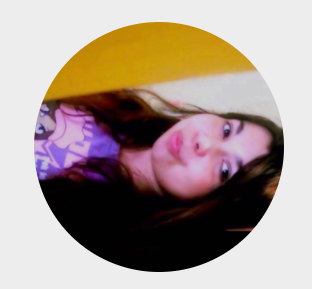

Minhas Redes Sociais
Quem sou eu?

Meu nome é Anajara M. Lucas, tenho 35 anos e sou estagiária de técnologia na SAP, estou migrando de carreira, faço Direito na Unisinos mas comecei Análise e Desenvolviento de Sistemas na Uniritter esse ano de 2021, porém estudo HTML e CSS desde 2020 no Alura. Atualmente estou dando continuidade no CursoemVIdeo e estou amando. Estou apaixonada por Front end e acho que seguirei essa linha na área da programação. Espero contribuir cada vez mais pra área de tecnologia e representar as mulheres do ramo.
Como falar comigo?